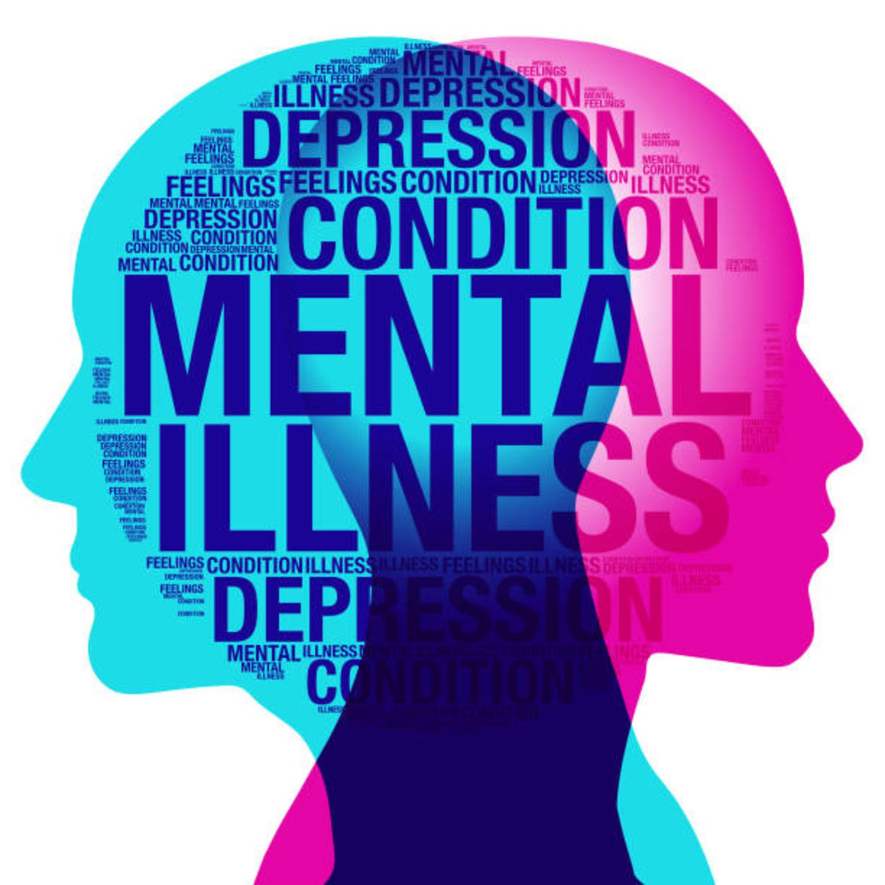
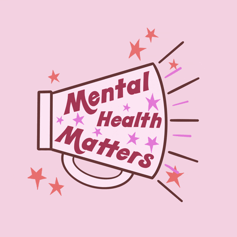
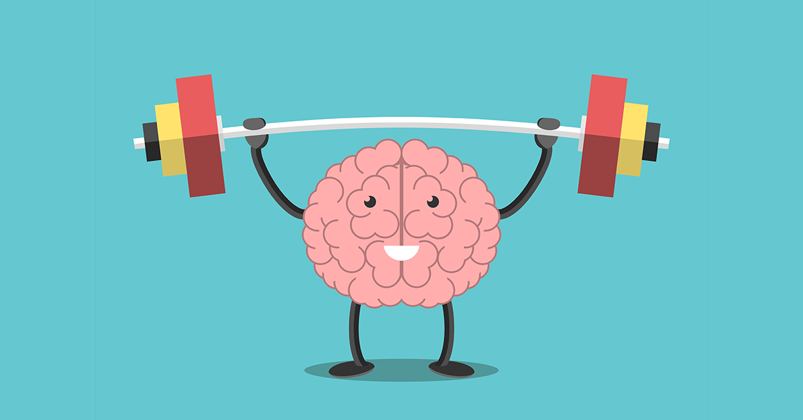
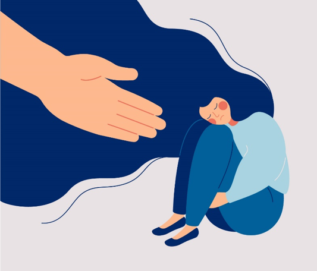
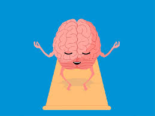

What is Mental-Health??
Definition

Mental health is the level of psychological well-being or an absence of mental illness. It is the state of someone who is "functioning at a satisfactory level of emotional and behavioral adjustment".
From the perspectives of positive psychology, mental health may include an individual's ability to enjoy life and to create a balance between life activities and efforts to achieve psychological resilience.
According to the World Health Organization (WHO), mental health includes "subjective well-being, perceived self-efficacy, autonomy, competence, inter-generational dependence, and self-actualization of one's intellectual and emotional potential, among others".
The WHO further states that the well-being of an individual is encompassed in the realization of their abilities, coping with normal stresses of life, productive work, and contribution to their community.
Cultural differences, subjective assessments, and competing professional theories all affect how one defines "mental health".
Why is Mental Health important?

Mental health is important because it can help you to
- Cope with the stresses of life
- Be physically healthy
- Have good relationships
- Make meaningful contributions to your community
- Work productively
- Realize your full potential
Your mental health is also important because it can affect your physical health.
For example, mental disorders can raise your risk for physical health problems such as stroke, type 2 diabetes, and heart disease.
Symptoms
Grief and depression are quite different but they can appear similar as they can both lead to feelings of intense sadness, insomnia, poor appetite and weight loss.
Depression stands out from grief as being more persistent, with constant feelings of emptiness and despair and a difficulty feeling pleasure or joy.
If you notice that depression symptoms continue, or your grief begins to get in the way of how you live, work, share relationships or live day-to-day, then it's important to get support or professional help.
Symptoms of mental disorders vary depending on the type and severity of the condition. Some general symptoms that may suggest a mental illness include:
In Adults
- Confused thinking
- Long-lasting sadness or irritability
- Extremely high and low moods
- Excessive fear, worry, or anxiety
- Social withdrawal
- Dramatic changes in eating or sleeping habits
- Strong feelings of anger
- Delusions or hallucinations (seeing or hearing things that are not really there)
- Increasing inability to cope with daily problems and activities
- Thoughts of suicide
- Denial of obvious problems
- Many unexplained physical problems
- Abuse of drugs and/or alcohol
In Older Children & Pre-Teens
- Changes in school performance, falling grades
- Inability to cope with daily problems and activities
- Excessive complaints of physical problems
- Defying authority, skipping school, stealing, or damaging property
- Intense fear of gaining weight
- Long-lasting negative mood, often along with poor appetite and thoughts of death
- Frequent outbursts of anger
- Abuse of drugs and/or alcohol
- Withdrawing from friends and activities
In Younger Children
- Changes in school performance
- Poor grades despite strong efforts
- Excessive worry or anxiety
- Hyperactivity
- Persistent nightmares
- Persistent disobedience and/or aggressive behavior
- Frequent temper tantrums
Causes Of Mental-Health
Environmental Factors
Certain stressors can trigger an illness in a person who is susceptible to mental illness. These stressors include:
Psycological Factors
Psychological factors that may contribute to mental illness include:
Biological Factors
Some mental illnesses have been linked to abnormal functioning of nerve cell circuits or pathways that connect particular brain regions. Nerve cells within these brain circuits communicate through chemicals called neurotransmitters.
"Tweaking" these chemicals -- through medicines, psychotherapy or other medical procedures -- can help brain circuits run more efficiently. In addition, defects in or injury to certain areas of the brain have also been linked to some mental conditions.
Genetics(Heredity):
Mental illnesses sometimes run in families, suggesting that people who have a family member with a mental illness may be somewhat more likely to develop one themselves. Susceptibility is passed on in families through genes.
Experts believe many mental illnesses are linked to abnormalities in many genes rather than just one or a few and that how these genes interact with the environment is unique for every person (even identical twins).
That is why a person inherits a susceptibility to a mental illness and doesn't necessarily develop the illness. Mental illness itself occurs from the interaction of multiple genes and other factors -- such as stress, abuse, or a traumatic event -- which can influence, or trigger, an illness in a person who has an inherited susceptibility to it.
Infections:
Certain infections have been linked to brain damage and the development of mental illness or the worsening of its symptoms.
Brain Defects & Injury:
Defects in or injury to certain areas of the brain have also been linked to some mental illnesses.
Prenatal Damage:
Some evidence suggests that a disruption of early fetal brain development or trauma that occurs at the time of birth
For example, loss of oxygen to the brain -- may be a factor in the development of certain conditions, such as autism spectrum disorder.
Substance Abuse:
Long-term substance abuse, in particular, has been linked to anxiety, depression, and paranoia.
Other Factors:
Poor nutrition and exposure to toxins, such as lead, may play a role in the development of mental illnesses.
Effects Of Mental-Health
Mental illness is a leading cause of disability. Untreated mental illness can cause severe
emotional, behavioral and physical health problems. Complications sometimes linked to mental
illness include:
- Unhappiness and decreased enjoyment of life
- Family conflicts
- Relationship difficulties
- Social isolation
- Problems with tobacco, alcohol and other drugs
- Missed work or school, or other problems related to work or school
- Legal and financial problems
- Poverty and homelessness
- Self-harm and harm to others, including suicide or homicide
- Weakened immune system, so your body has a hard time resisting infections
- Heart disease and other medical conditions

In the short-term, mental health problems can cause people to be alienated from their peers because of perceived unattractive personality traits or behaviors. They can also cause anger, fear, sadness and feelings of helplessness if the person does not know or understand what is happening.
In the long-term, mental health disorders can drive a person to commit suicide. According to the National Institute for Mental Health, over 90 percent of suicides have depression or another mental disorder as factors.
Recovery
Clinical Recovery
Your doctor might have talked to you about ‘recovery’. Some doctors and health professionals think of recovery as no longer having mental health symptoms. Sometimes this is called ‘clinical recovery’.
Personal Recovery
Personal recovery is individual to you. What is important to you, is likely to be different to what is important to someone else.
The following areas may be helpful for you to explore as part of your recovery journey :
Hope
Hope underpins the recovery process of mental illness, as recovery depends on the notion that a patient desires to get better. This makes hope the route by which it occurs.
Hope becomes a foundation and the energy that drives us to find a way to get better and heal. It keeps us strong when we encounter challenges. And hope gives us a sense of joy and peace, knowing that a better tomorrow exists.
Acceptance
Your recovery journey may be easier if you learn to accept your illness and the difficulties it causes. You may have to accept that there are some things that you can’t do anymore. But focus on what you can do. You are more likely to reach your goal if it is realistic.
Acceptance may help you to make positive changes and help you to reach new goals.
Control
Take control of your life. You are in control of you. Do what is best for you.
It may be helpful to think about these questions.
Mood-Diary
Keeping a diary or log of your mental health for a few weeks may be helpful to help you to take control of your symptoms.
You could write down when you feel mentally unwell or stressed. You should include things like:
The mood diary could also help you to identify things which can make you unwell. These things are known as ‘triggers.’ Identifying your triggers can help you to have more control over your stress levels.
Achieving Goals
Setting achievable goals can help you to recover.
To help you to set yourself a goal, think about what is important to you.
Some goals will need more work than other goals. And will take longer to achieve. Make sure that you are realistic with your goals. You don’t want to give yourself a goal which you are unlikely to be able to do. This is likely to have a negative impact on your mental wellbeing.
Whatever you decide to do make sure that you stick to it. There is not a quick fix and change will take time.
Lifestyle
Making small lifestyle changes can improve your wellbeing and can help your recovery.
FAQ's
Focus On Activities You Enjoy
Any activity that gets you moving counts. That could include throwing a Frisbee with a dog or friend, walking laps of a mall window shopping, or cycling to the grocery store. If you’ve never exercised before or don’t know what you might enjoy, try a few different things.
Activities such as gardening or tackling a home improvement project can be great ways to start moving more when you have a mood disorder—as well as helping you become more active, they can also leave you with a sense of purpose and accomplishment.
Be Comfortable
Whatever time of day you decide to exercise, wear clothing that’s comfortable and choose a setting that you find calming or energizing. That may be a quiet corner of your home, a scenic path, or your favorite city park.
Reward Yourself
Part of the reward of completing an activity is how much better you’ll feel afterwards, but it always helps your motivation to promise yourself an extra treat for exercising. Reward yourself with a hot bubble bath after a workout, a delicious smoothie, or with an extra episode of your favorite TV show.
Make Exercise a Social Activity
Exercising with a friend or loved one, or even your kids, will not only make exercising more fun and enjoyable, it can also help motivate you to stick to a workout routine. You’ll also feel better than if you were exercising alone. In fact, when you’re suffering from a mood disorder such as depression, the companionship can be just as important as the exercise.
Good mental health is not simply the absence of diagnosable mental health problems, although good mental health is likely to help protect against development of many such problems.
Good mental health is characterised by a person’s ability to fulfil a number of key functions and activities, including:
Good Mental health is a state of well-being in which an individual realizes his or her own abilities, can cope with the normal stresses of life, can work productively and is able to make a contribution to his or her community.

Set time aside with no distractions
It is important to provide an open and non-judgemental space with no distractions.
Let them share as much or as little as they want to
Let them lead the discussion at their own pace. Don’t put pressure on them to tell you anything they aren’t ready to talk about. Talking can take a lot of trust and courage. You might be the first person they have been able to talk to about this.
Don't try to diagnose or second guess their feelings
You probably aren’t a medical expert and, while you may be happy to talk and offer support, you aren’t a trained counsellor. Try not to make assumptions about what is wrong or jump in too quickly with your own diagnosis or solutions.
Keep questions open ended
Say "Why don’t you tell me how you are feeling?" rather than "I can see you are feeling very low". Try to keep your language neutral. Give the person time to answer and try not to grill them with too many questions.
Talk about well-being
Exercise, having a healthy diet and taking a break can help protect mental health and sustain wellbeing. Talk about ways of de-stressing and ask if they find anything helpful.
Listen carefully to what they tell you
Repeat what they have said back to them to ensure you have understood it. You don’t have to agree with what they are saying, but by showing you understand how they feel, you are letting them know you respect their feelings.
Offer them help in seeking professional support and provide information on ways to do this
You might want to offer to go the GP with them, or help them talk to a friend or family member. Try not to take control and allow them to make decisions.
Know your limits
Ask for help or signpost if the problem is serious. If you believe they are in immediate danger or they have injuries that need medical attention, you need to take action to make sure they are safe. More details on dealing in a crisis can be found below.
Anxiety, depression and suicide can affect any of us at any time. But at different points in our lives we can be at greater risk – when we're going through big changes such as becoming an adult, retiring, starting a family, or losing someone we love.
For example:
Experiencing discrimination because of our sexuality, gender identity, ethnicity or
religion can also cause psychological distress and make us much more vulnerable to
depression and anxiety.